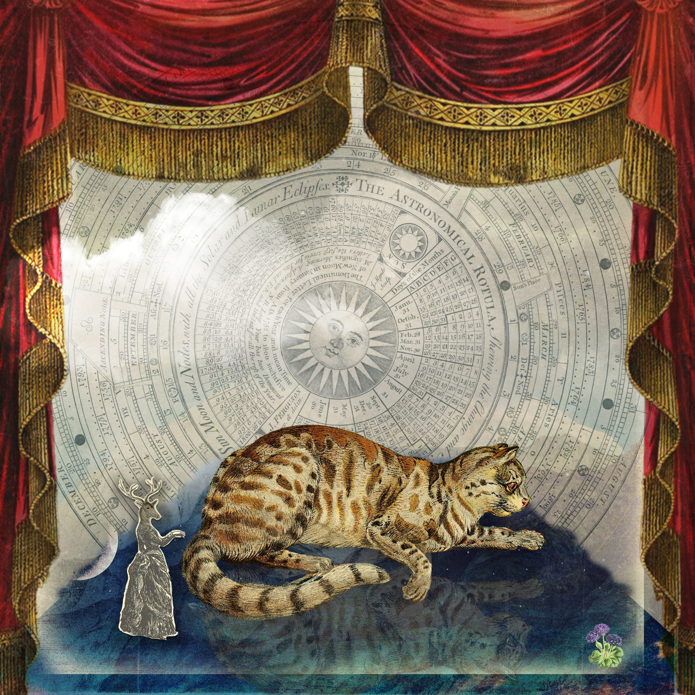

The ministry of small injustices uses domestic cats and the cyhydedd naw ban to solve the problem of long meetings.

- Problem (chosen)
- Long meetings
- Creature (dealt)
- Domestic cat
- Form (dealt)
- Cyhydedd naw ban
The problem grows because every hour is spoken for and none of them is answered. A domestic cat sleeps twelve hours or more a day, in short bouts, wherever the sun has settled, and attends to its household only when summoned by something it already intended to do. It greets those it trusts with a long, slow blink, a whole conversation in one closing of the eyes. No cat has applied to the Ministry for more time. The Ministry has concluded that the cat is in a meeting.
The department of equal measures suggests that each gathering lasts nine minutes, and that no hour may stand unpaired. Every hour spent seated at a table must be accompanied by an hour asleep in a patch of sun, to be taken the same afternoon. Questions are to be answered by slow blink. A gathering at which everyone has blinked is concluded.
Risks. Some departments now gather only to sleep, and report unprecedented consensus. The Ministry is unable to schedule a review, as everyone has blinked.
The diary’s clear, the blinds are drawn,
and no one has been seen since dawn.